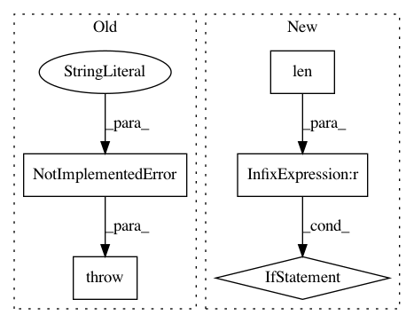

91a9437c8c6ed68d14884cc040c988301a7430ea,src/graph_transpiler/webdnn/frontend/chainer/functions/normalization.py,,_convert_normalize_l2,#,11
Before Change
@ChainerConverter.register_handler("NormalizeL2")
def _convert_normalize_l2(converter: ChainerConverter, c_op: "chainer.functions.NormalizeL2"):
// TODO
raise NotImplementedError("[ChainerConverter] NormalizeL2 is not supported")
@ChainerConverter.register_handler("LocalResponseNormalization")
def _convert_local_response_normalization(converter: ChainerConverter,
After Change
def _convert_normalize_l2(converter: ChainerConverter, c_op: "chainer.functions.NormalizeL2"):
x = converter.get_variable(c_op.inputs[0])
if len(c_op.axis) > 1: // c_op.axis: tuple
raise ValueError("The number of axis for NormalizeL2 must be 1.")
y, = Normalize(None, axis=x.order.axes[c_op.axis[0]], eps=c_op.eps)(x)
converter.set_variable(c_op.outputs[0](), y)
In pattern: SUPERPATTERN
Frequency: 3
Non-data size: 5
Instances
Project Name: mil-tokyo/webdnn
Commit Name: 91a9437c8c6ed68d14884cc040c988301a7430ea
Time: 2019-06-25
Author: hidaka@mi.t.u-tokyo.ac.jp
File Name: src/graph_transpiler/webdnn/frontend/chainer/functions/normalization.py
Class Name:
Method Name: _convert_normalize_l2
Project Name: ellisdg/3DUnetCNN
Commit Name: f186e416fdca5ccae5c2df52a556885baccd5474
Time: 2017-04-14
Author: david.ellis@unmc.edu
File Name: generator.py
Class Name:
Method Name: data_generator
Project Name: quantumlib/Cirq
Commit Name: 451b2f16acd7dcc8a38cddeff9383143184906fc
Time: 2021-02-08
Author: smitsanghavi@users.noreply.github.com
File Name: cirq/circuits/circuit_operation.py
Class Name: CircuitOperation
Method Name: repeat